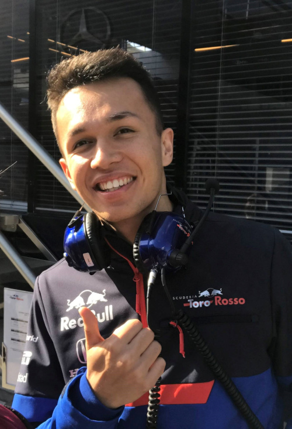
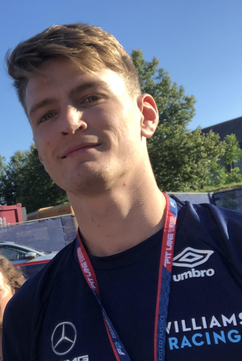

História
A Williams Grand Prix Engineering Limited, competindo como Williams Racing, é uma equipe e construtor de Fórmula 1 fundada por Frank Williams e Patrick Head. A equipe foi formada em 1977, após as duas operações anteriores malsucedidas de Frank Williams: a Frank Williams Racing Cars (1969 a 1975) e Wolf – Williams Racing (1976).
A primeira corrida da equipe foi o Grande Prêmio da Espanha de 1977, onde a nova equipe competiu com um chassi da March pilotado pelo belga Patrick Nève. A Williams começou a fabricar seus próprios carros no ano seguinte, e o suíço Clay Regazzoni venceu a primeira corrida da história da equipe no Grande Prêmio da Grã-Bretanha de 1979.
Em 21 de agosto de 2020, a Williams anunciou que havia sido adquirida pela Dorilton Capital, um grupo de investimento privado dos Estados Unidos.
Pilotos
-
Alexander Albon
- Nacionalidade: Tailândia
- Idade: 27 anos
- Corridas: 68
- Vitórias: 0
- Pódios: 2
- Campeão: 0 vez
-
Logan Sargeant
- Nacionalidade: Estados Unidos
- Idade: 22 anos
- Corridas: 9
- Vitórias: 0
- Pódios: 0
- Campeão: 0 vez
*Dados do dia 26/06/2023